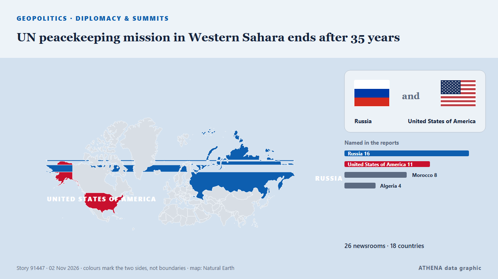

Diplomacia y cumbres
PatrocinadoPresentado por  Cybernetics and Artificial Intelligence Lab Welcome to the Cybernetics and Artificial Intelligence Laboratory, established at the Department of Business Administration of the National
Cybernetics and Artificial Intelligence Lab Welcome to the Cybernetics and Artificial Intelligence Laboratory, established at the Department of Business Administration of the National
| 20 oct | 0 |
|---|---|
| 21 oct | 0 |
| 22 oct | 0 |
| 23 oct | 0 |
| 24 oct | 0 |
| 25 oct | 1 |
| 26 oct | 1 |
| 27 oct | 0 |
| 28 oct | 4 |
| 29 oct | 2 |
| 30 oct | 7 |
| 31 oct | 4 |
| 1 nov | 2 |
| 2 nov | 3 |
Los titulares se muestran en inglés, tal como se publicaron.

UN peacekeeping mission in Western Sahara ends after 35 years
Morocco, which claims the Western Sahara as its own, welcomed the decision, while its opponents in the Algeria-backed Polisario Front expressed concern. de Free Malaysia Today
Iran says it can reopen Hormuz in two days if US meets conditions
Foreign ministry spokesman Esmaeil Baghaei said the timeline shortened from the seven days first proposed in September was “another indication of Iran’s good-faith approach” but that “everything… de Euronews English
Trump says Flavio Bolsonaro can stay in US 'as long as he wants'
The former conservative presidential candidate left Brazil after losing the election to leftist incumbent Luiz Inacio Lula da Silva. de Free Malaysia Today
Trump questioned about new Iran strikes: ‘Would I tell you?’
Expectations are growing that the US President will order new strikes against Iran as soon as this week. de Sydney Morning Herald
Turkey Nominates OSCE Chief Feridun Sinirlioglu for UN Secretary-General
Turkey has nominated Feridun Sinirlioglu, head of the Organization for Security and Co-operation in Europe (OSCE), to become the next secretary-general of the United Nations. de Greek Reporter
Erdogan, Zelensky talk Black Sea Grain Corridor
Turkish President Recep Tayyip Erdogan and Ukrainian President Volodymyr Zelensky agreed on Saturday to continue work on the Black Sea Grain Corridor, aimed at enabling grain shipments from Ukraine. de AzerNews
Iranian negotiators in Doha to continue talks to end the US-Iran war, official says
Iranian negotiators were in Doha on Sunday for a third consecutive day of talks with Qatari mediators aimed at pushing for a deal to end the US-Israeli war on Iran, an official briefed on the… de Cyprus Mail
Qatari mediators hold over 12 hours of talks aimed at renewing direct US-Iran negotiations - report
A diplomatic source told Axios that Qatari mediators were in contact with the White House over the course of Friday’s talks and that “there was positive progress" in the effort to reach a deal. de The Jerusalem Post
G20 FM meeting ends without joint communique amid deep divisions
Foreign ministers from the Group of 20 leading economies are gathering in Atlanta on October 30-31 for talks expected to expose continuing divisions among Western governments over Russia's war in… de RFE/RL (English)
Evacuees from Russian-occupied Oleshky reunited with relatives in Ukraine
Russia and Ukraine have not specified how many people chose to leave the city. de The Irish News (Belfast)
Rapper Nicki Minaj joins Trump onstage at Michigan rally
The Super Bass singer is the latest big name to campaign in Michigan, where a tight Senate race is playing out ahead of the 3 November midterms. de BBC News
Rubio says US yet to decide on new Iran strikes
ATLANTA: US President Donald Trump has not made a decision about fresh strikes on Iran amid stalled peace talks, US Secretary of State Marco Rubio said Saturday. de Business Recorder
Russian foreign minister Lavrov arrives in US for G20 meeting
Russian Foreign Minister Sergey Lavrov has arrived in the US to attend a G20 meeting in Atlanta amid global tensions on various issues. de Arab News
Aid operation and evacuations in Oleshky amid brief truce agreed to by Russia and Ukraine
A humanitarian mission entered the devastated city of Oleshky on Friday, officials said, as Russia and Ukraine observed the most significant truce of the 4½-year war that began with Moscow's… de PBS NewsHour World
Nations commit to get nature goals back on track
Nearly 200 nations struck hard-fought agreements Friday at a U.N. biodiversity summit, but the outcome was accompanied by disappointment over missed opportunities to address humanity's destructive… de Phys.org
Qatari Mediators Return to Tehran in Push for US-Iran Peace Deal
Qatari mediators returned to Tehran on Friday to advance efforts for a US-Iran agreement, but disagreements over nuclear negotiations, oil sanctions and a US port blockade continue to obstruct a… de Khaama Press
Starved residents of Russian-occupied Oleshky return to Ukraine during a rare local ceasefire
The six-day ceasefire was reached after mediation efforts by US first lady Melania Trump and with the pope’s help. de The Straits Times
Oil jumps 2%, settles at 6-month highs on fears of escalation in Iran
Oil prices jumped more than 2 percent on Friday and settled at their highest levels since the end of April, as traders braced for a potential escalation in the Iran war after the U.S. midterm… de The Korea Times
Trump reverses decision to cancel Kansas and Iowa rallies before midterms
The president cancelled the events in favor of tele-rallies, as Republicans face a fight to retain control of Congress Donald Trump cancelled, and then promptly uncancelled, two in-person rallies in… de The Guardian